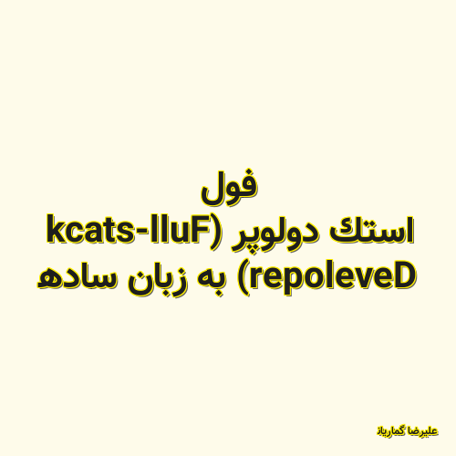

✖

فول استک دولوپر (Full-stack Developer) به زبان ساده
اگر در دنیای برنامه نویسی باشید حتما با اصطلاحاتی مانند فرانت اند،بک اند،فول استک دولوپر آشنا هستید یا اینکه چندین بار این اصطلاحاتی به گوشتان خورده است.در این مقاله کد فرند قصد دارد با فول استک دولوپر (full stack developer) به زبان ساده شمارا آشنا کند.
علیرضا گماریان 2020-11-29 18:25:00 مطالعه پست گزارش خرابی لینک / محتوای مجرمانه / تغییر محتویات لینک